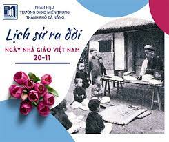

1.Nguồn gốc của ngày nhà giáo Việt Nam
Sau 3 năm, vào năm 1949, tại hội nghị ở thủ đô Warsaw của Ba Lan, FISE ban hành bản "Hiến chương các nhà giáo" gồm 15 chương. Hiến chương không chỉ thể hiện cuộc chiến đấu chống lại hệ thống giáo dục bị chi phối bởi tư bản và phong kiến, mà còn nhấn mạnh sự quan trọng của việc xây dựng hệ thống giáo dục tốt đẹp và bảo vệ quyền lợi của người dạ.
Năm 1953, Công đoàn Giáo dục Việt Nam gia nhập FISE, tham gia vào cuộc họp tại Ba Lan vào tháng 8/1957. Ngày 20/11/1958, Việt Nam tổ chức ngày Quốc tế Hiến chương các nhà giáo lần đầu tiên tại miền Bắc và sau đó tại nhiều vùng giải phóng miền Nam.
Năm 1982, Bộ giáo dục và đào tạo đã có đề nghị chính thức đến Hội đồng bộ trưởng (nay là Chính phủ) nước Cộng hoà xã hội chủ nghĩa Việt Nam về việc ra quyết định lấy ngày 20/11 hàng năm là “Ngày nhà giáo Việt Nam”. Lễ kỷ niệm ngày 20/11 - ngày Nhà giáo Việt Nam đầu tiên được tổ chức hết sức long trọng tại Quảng trường Ba Đình - Hà Nội vào ngày 20/11/1982.
Đến khi thống nhất đất nước, ngày 20/11 diễn ra mỗi năm và trở thành ngày truyền thống của nghề giáo. Năm 1982, ngày này chính thức trở thành Ngày Nhà giáo Việt Nam và được tổ chức trọng thể trên toàn quốc.

2.Ý nghĩa của ngày nhà giáo giáo Việt Nam
Ngày 20/11 sớm đã trở thành một ngày lễ kỷ niệm nghề giáo truyền thống của Việt Nam. Điều này vô cùng phù hợp với một dân tộc hiếu học và truyền thống tôn sự trọng đạo như Việt Nam.
Ngày 20/11 chính là dịp để thế hệ học sinh thể hiện lòng biết ơn, tri ân sâu sắc đến thầy cô giáo của mình. Dù đang ngồi hay rời xa ghế nhà trường, cứ đến ngày 20/11, mọi người đều hướng đến thầy cô giáo, gửi những lời chúc, những món quà tốt đẹp đến thầy cô.
.jpg)
Ngày 20/11 sớm đã trở thành một ngày lễ kỷ niệm nghề giáo truyền thống của Việt Nam. Điều này vô cùng phù hợp với một dân tộc hiếu học và truyền thống tôn sự trọng đạo như Việt Nam.
Ngày 20/11 chính là dịp để thế hệ học sinh thể hiện lòng biết ơn, tri ân sâu sắc đến thầy cô giáo của mình. Dù đang ngồi hay rời xa ghế nhà trường, cứ đến ngày 20/11, mọi người đều hướng đến thầy cô giáo, gửi những lời chúc, những món quà tốt đẹp đến thầy cô.
3.Lời chúc
1. Nhân ngày 20/11, chúng em xin gửi đến các thầy cô những lời tri ân tốt đẹp nhất. Xin kính chúc các thầy cô thật mạnh khỏe để mãi là người chỉ đường gần gũi và yêu thương nhất đối với mọi học sinh.
2. Chúc các thầy cô có một ngày Nhà giáo Việt Nam vui vẻ và hạnh phúc. Chúc cho thầy cô sẽ luôn đủ "Tâm - Trí - Lực" để cống hiến nhiều hơn cho sự nghiệp trồng người cao cả và vĩ đại này.
3. Nhân dịp lễ 20/11, chúng em gửi tới các thầy cô lời chúc tốt đẹp và chân thành nhất, chúc thầy cô luôn hoàn thành tốt nhiệm vụ trong sự nghiệp trồng người.
4. Xin cảm ơn cô, người đã dạy cho con những nét chữ đầu tiên. Những lời dạy của cô ngày đó con vẫn luôn khắc ghi. Nhân ngày 20/11, con xin kính chúc cô luôn mạnh khỏe và hạnh phúc để mãi mãi vun đắp cho sự nghiệp trồng người!
5. Cảm ơn các thầy cô vì những tình yêu thương và sự nhiệt tình đã trao trọn cho chúng em. Nhân ngày 20/11, xin kính chúc các thầy cô thật mạnh khỏe và hạnh phúc!
6. Em chúc cô luôn mạnh khoẻ, trẻ trung, vui tính, luôn luôn giữ vững niềm tin và ngày càng nâng cao sự dũng cảm trước những đứa học trò nghịch như quỷ sứ bọn em. Happy Vietnam’s Teacher Day.
7. Nếu được hỏi: Thành công bắt nguồn từ đâu? Em sẽ trả lời rằng: “Là cô - người đã mang đến cho chúng em kiến thức, hành trang bước vào đời”.
8. Mãi mãi bên con tiếng của thầy vang vọng. Đã xa rồi mà con ngỡ hôm qua. Bài giảng của thầy như chắp cánh ước mơ, cho con bay khỏi vùng trời cổ tích.
9. Ơn dạy dỗ cao dường hơn núi, nghĩa thầy cô như nước biển khơi, công cha mẹ con luôn tạc dạ, ơn thầy cô con mãi ghi lòng. Nhân ngày nhà giáo Việt Nam con xin kính chúc thầy mạnh khỏe, thành công trong sự nghiệp trồng người.
10. Hôm nay là ngày 20/11, con gửi tặng bông hoa điểm mười này đến cô. Mong cô luôn vui tươi, hạnh phúc và có thật nhiều sức khỏe để dạy dỗ chúng con nên người
11. Nhân ngày 20/11, con kính chúc cô thật nhiều sức khỏe, vui vẻ và hạnh phúc. Con yêu cô!
12. Chúc mừng ngày 20/11. Con yêu cô rất nhiều. Chúc cô luôn mạnh khỏe và vui vẻ, luôn yêu đời, yêu nghề!
13. Con chúc cô có một ngày lễ 20/11 thật vui vẻ và hạnh phúc. Con hứa sẽ chăm ngoan và luôn nghe lời cô hơn nữa.